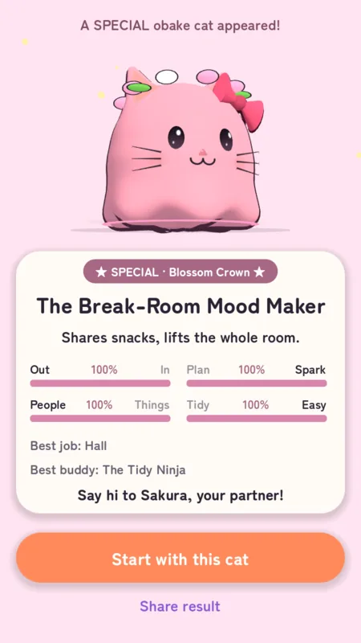
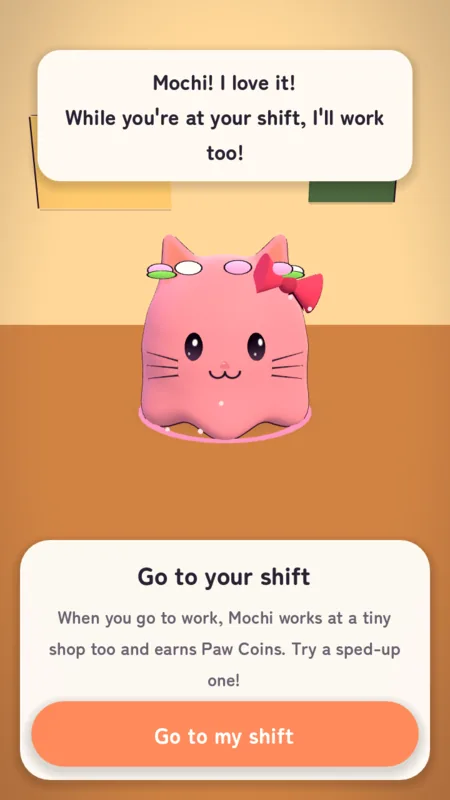

FIND YOUR CAT
A 12-question quiz, 16 cat types.
A personality quiz in the spirit of MBTI picks your cat-obake. You name it, and it becomes your partner and the owner of your island.
Then it asks you to go to your shift. While you work, it works too.

